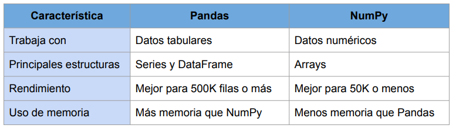

PYTHON ¶
- Lenguaje de programación orientado a objetos de alto nivel y de propósito general.
- Se basa en la simpleza y en la facilidad de lectura de código disminuyendo costes de mantenimiento y facilitando su aprendizaje.
- Soporta módulos y librerías que favorecen la reutilización de código.
- Dispone de potentes estructuras de datos y librerías enfocadas al análisis de datos.
- Es un lenguaje interpretado, se ejecuta línea a línea. No hay un paso de compilación como en otros lenguajes.
- Es open source y multiplataforma (windows, Linux, Mac,...)
PANDAS¶
Pandas (panel-data) es una librería de código abierto escrito en python que proporciona estructuras de datos y herramientas de análisis de datos de alto rendimiento, rápidas y fáciles de usar para manipular datos numéricos y series de tiempo. Está construida sobre la librería NumPy.
Características de la librería Pandas¶
- Define nuevas estructuras de datos basadas en los arrays de la librería NumPy pero con nuevas funcionalidades.
- Permite leer y escribir fácilmente ficheros en formato CSV, Excel, etc.
- Permite acceder a los datos mediante índices o nombres para filas y columnas.
- Ofrece métodos para reordenar, dividir y combinar conjuntos de datos.
- Permite trabajar con series temporales.
- Realiza todas estas operaciones de forma eficiente.
Tipos de datos de Pandas¶
Pandas tiene tres estructuras de datos diferentes:
- Series: Estructura de una dimensión que contiene una secuencia de valores y un array de etiquetas asociadas (el índice).
- DataFrame: Estructura de dos dimensiones (tablas).
- Panel: Estructura de tres dimensiones (cubos).
Estas estructuras se construyen a partir de la librería Numpy.
Características de un Dataframe¶
- Almacena una tabla con una colección ordenada de columnas.
- Cada columna puede ser de un tipo diferente (numérico, cadena, booleano,...)
- Tiene índices tanto para las filas como para las columnas.
- Cada columna es un elemento de tipo Series.
Pandas VS NumPy¶
- NumPy es una librería para cálculo numérico y procesamiento de arrays multidimensionales.
- Los cálculos usando arrays de NumPy son más rápidos que los arrays normales de Python.
- Permite manejar gran cantidad de datos y es adecuada para cálculo matricial.

Descargar la librería de Pandas¶
import pandas as pd
pd.__version__
Series¶
La clase de objetos Series son estructuras similares a los arrays de una dimensión. Son homogéneas, es decir, sus elementos tienen que ser del mismo tipo, y su tamaño es inmutable, es decir, no se puede cambiar el número de elementos, aunque si su contenido.
Creación de un objeto de la clase Series (constructor) a partir de una lista o tupla
Series(data=lista, index=indices, dtype=tipo) : Devuelve un objeto de tipo Series con los valores de lista, las claves especificadas en índices y el tipo de datos indicado en tipo. Si no se pasa la lista de índices se utilizan como índices los enteros del 0 al n-1, done n es el tamaño de la serie. Si no se pasa el tipo de dato se deduce.
s = pd.Series({'Matemáticas': 6.0, 'Economía': 4.5, 'Programación': 8.5})
print(s)
Matemáticas 6.0
Economía 4.5
Programación 8.5
dtype: float64
Atributos de la clase Series¶
-
s.size: Devuelve el número de elementos de la serie s. También podemos utilizar len(s). -
s.index: Devuelve una lista con los nombres de las filas del DataFrame. -
s.dtype: Devuelve el tipo de datos de los elementos de la serie s. -
s.values: Devuelve una lista con los valores asociados al índice.
import pandas as pd
s = pd.Series([1, 2, 2, 3, 3, 3, 4, 4, 4, 4])
print(s.size)
print(s.index)
print(s.values)
print(s.dtype)
Acceso a elementos de una Serie¶
s = pd.Series({'Matemáticas': 6.0, 'Economía': 4.5, 'Programación': 8.5})
print(s[0])# buscar por índice
print(s[1])
print()
print(s[1:3])#el indice funciona como en listas
print()
print(s['Economía'])#buscar por nombre
print(s.Economía)#otra forma de buscar por nombre cuando no tiene espacios
print()
print(s[['Programación', 'Matemáticas']])
print()
print(s['Matemáticas':'Economía'])#el último índice es válido
print()
print(s.index)
print(s.values)
Métodos estadísticos de la clase Series¶
- s.count() : Devuelve el número de elementos que no son None ni NaN (no es un número) en la serie s.
- s.sum() : Devuelve la suma de los datos de la serie s cuando los datos son de un tipo numérico, o la concatenación de ellos cuando son del tipo cadena str.
- s.cumsum() : Devuelve una serie con la suma acumulada de los datos de la serie s cuando los datos son de un tipo numérico.
- s.value_counts() : Devuelve una serie con la frecuencia (número de repeticiones) de cada valor de la serie s.
- s.min() : Devuelve el menor de los datos de la serie s.
- s.max() : Devuelve el mayor de los datos de la serie s.
- s.mean() : Devuelve la media de los datos de la serie s cuando los datos son de un tipo numérico.
- s.std() : Devuelve la desviación típica de los datos de la serie s cuando los datos son de un tipo numérico.
- s.describe(): Devuelve una serie con un resumen descriptivo que incluye el número de datos, su suma, el mínimo, el máximo, la media, la desviación típica y los cuartiles.
import pandas as pd
s = pd.Series([1, 1, 1, 1, 2, 2, 2, 3, 3, 4])
print(s.count())
print(s.sum())
print()
print(s.cumsum())
print()
print(s.value_counts())
print(s.value_counts(normalize=True)*100)#tanto por 1
print(s.min())
print(s.max())
print(s.mean())
print(s.std())
print()
print(s.describe())
Ordenar una Serie¶
-
s.sort_values(ascending=booleano): Devuelve la serie que resulta de ordenar los valores la serie s. Si argumento del parámetro ascending es True el orden es creciente y si es False decreciente.
-
df.sort_index(ascending=booleano) : Devuelve la serie que resulta de ordenar el índice de la serie s. Si el argumento del parámetro ascending es True el orden es creciente y si es False decreciente.
import pandas as pd
s = pd.Series({'Matemáticas': 6.0, 'Economía': 4.5, 'Programación': 8.5})
print(s.sort_values())
print()
print(s.sort_index(ascending = False))
Eliminar los datos desconocidos en una Serie¶
Los datos desconocidos se representan en Pandas por NaN y los nulos por None. Tanto unos como otros suelen ser un problema a la hora de realizar algunos análisis de datos, por lo que es habitual eliminarlos. Para eliminarlos de una serie se utiliza el siguiente método:
- s.dropna(): Elimina los datos desconocidos o nulos de la serie s.
import pandas as pd import numpy as np s = pd.Series(['a', 'b', None, 'c', np.NaN, 'd']) print(s) print() print(s.dropna()) print() # la serie es inmutable print(s)
DataFrame¶
Un objeto del tipo DataFrame define un conjunto de datos estructurado en forma de tabla donde cada columna es un objeto de tipo Series, es decir, todos los datos de una misma columna son del mismo tipo, y las filas son registros que pueden contender datos de distintos tipos.
Un DataFrame contiene dos índices, uno para las filas y otro para las columnas, y se puede acceder a sus elementos mediante los nombres de las filas y las columnas.
import pandas as pd
#cada objeto del diccionario es una columna
datos = {'nombre':['María', 'Luis', 'Carmen', 'Antonio'],
'edad':[18, 22, 20, 21],
'grado':['Economía', 'Medicina', 'Arquitectura', 'Economía'],
'correo':['maria@gmail.com', 'luis@yahoo.es', 'carmen@gmail.com', 'antonio@gmail.com']
}
print(type(datos))
print()
df = pd.DataFrame(datos)
print(type(df))
print(df)
df
Atributos y métodos de un DataFrame¶
-
df.info() : Devuelve información (número de filas, número de columnas, índices, tipo de las columnas y memoria usado) sobre el DataFrame df.
-
df.shape : Devuelve una tupla con el número de filas y columnas del DataFrame df.
-
df.size : Devuelve el número de elementos del DataFrame.
-
len(df) : Defuelve el número de filas del DataFrame.
-
df.columns : Devuelve una lista con los nombres de las columnas del DataFrame df.
-
df.index : Devuelve una lista con los nombres de las filas del DataFrame df.
-
df.dtypes : Devuelve una serie con los tipos de datos de las columnas del DataFrame df.
-
df.head(n) : Devuelve las n primeras filas del DataFrame df.
-
df.tail(n) : Devuelve las n últimas filas del DataFrame df.
-
df.T: Devuelve la traspuesta, cambia filas por columnas.
Renombrar los nombres de las filas y las columnas¶
- df.rename(columns=columnas, index=filas): Devuelve el DataFrame que resulta de renombrar las columnas indicadas en las claves del diccionario columnas con sus valores y las filas indicadas en las claves del diccionario filas con sus valores en el DataFrame df.
df = pd.DataFrame() nombres = ['Juan', 'Laura', 'Pepe'] edades = [42, 40, 37] df['Nombre'] = nombres df['Edad'] = edades df.rename(columns={'Nombre':'Nom'}, index={0:100}) print(df)
Acceso a los elementos de un Dataframe¶
Accesos mediante posiciones:
- df.iloc[i,j]: Devuelve el elemento que se encuentra en la fila i y la columna j del DataFrame df. Pueden indicarse secuencias de índices para obtener partes del DataFrame.
- df.iloc[filas, columnas]: Devuelve un DataFrame con los elementos de las filas de la lista filas y de las columnas de la lista columnas.
-
df.iloc[i]:Devuelve una serie con los elementos de la fila i del DataFrame df.
Acceso mediante nombres:df = pd.DataFrame([[1, 2], [4, 5], [7, 8]], index=['cobra', 'viper', 'sidewinder'], columns=['max_speed', 'shield']) df df.iloc[0] df.iloc[[0, 1]] df.iloc[:3] -
df.loc[fila, columna]: Devuelve el elemento que se encuentra en la fila con nombre fila y la columna de con nombre columna del DataFrame df.
df.loc['viper']
df.loc['cobra', 'shield']